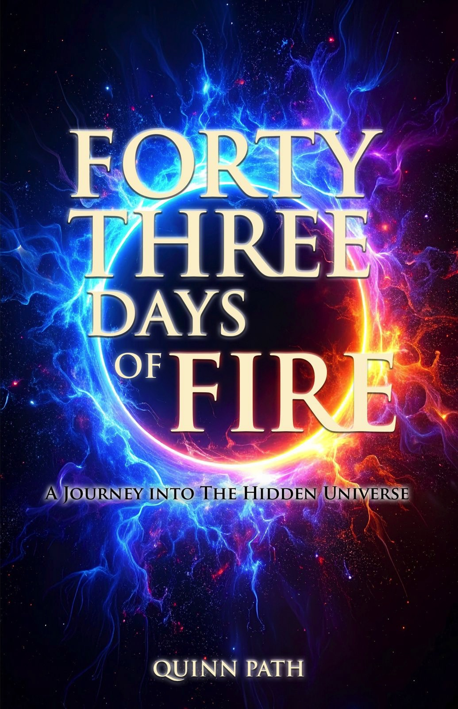

Free Excerpt
from Forty-Three Days of Fire: A Journey Into The Hidden Universe
In the unlikely setting of an Australian meditation retreat, Quinn Path heard something that would change the trajectory of his life. What followed was a journey to Myanmar — and forty-three days that revealed capabilities of consciousness most people never suspect exist.
Enter your email below to read the full Introduction — and discover why readers from Germany, Italy, Australia, Canada, the UK, and the United States have called this book "a rare gem", "an enlightening journey", and "a must-read for seekers."
Enter your email and the Introduction will appear instantly. You'll also receive occasional updates on new books and writings — no spam, ever.

★★★★✦
4.7 stars · 30 reviews on Amazon